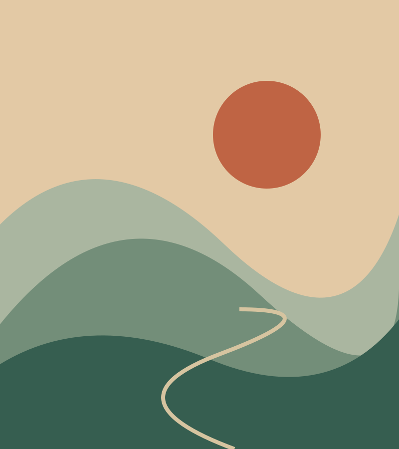

Presence
Time, not counted in hours or seconds, days or years, but in presence
Read entry
Poems, stories & collected moments
Time, not counted in hours or seconds, days or years, but in presence
Read entrySeeking answers to the questions I am not wise enough to ask
Read entryWhy did we learn to hold the blame but never self-defense?
Read entryWalls closing in
Read entrySitting out under the stars, coffee in hand, a full French press on standby
Read entrySuspended in the silence of an early morning, between last night's construction ending and this morning's work crew arriving
Read entryFinding a way through
Read entryBEHIND THE NOTEBOOK
That's a pen name. And this is my growing notebook of words - some might qualify as poems, others as stories or scenes, some as journal entries - some photos and videos thrown in. Life snippets. Come as your are and stay a while.